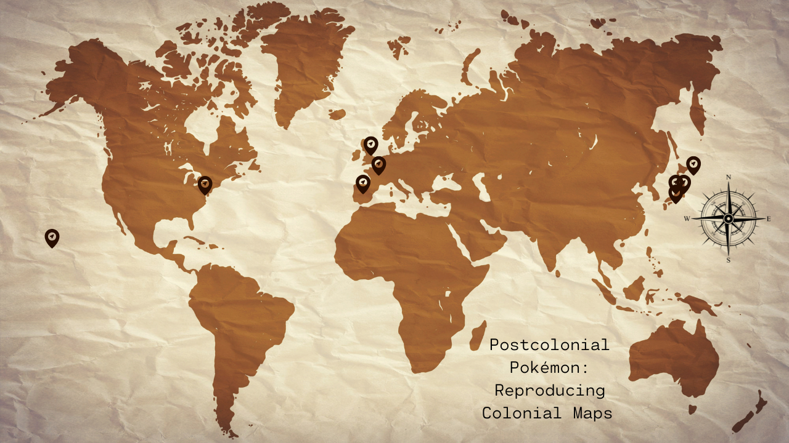

<map name="image-map">
    <area target="" alt="Unova" title="Unova" href="" coords="398,269,252,345" shape="rect">
    <area target="" alt="Alola" title="Alola" href="" coords="55,369,145,423" shape="rect">
    <area target="" alt="Galar" title="Galar" href="" coords="629,217,570,254" shape="rect">
    <area target="" alt="Paldea" title="Paldea" href="" coords="566,277,608,323" shape="rect">
    <area target="" alt="Kalos" title="Kalos" href="" coords="594,250,638,284" shape="rect">
    <area target="" alt="" title="" href="Kanto &amp; Johto " coords="1086,284,1126,311" shape="rect">
    <area target="" alt="" title="" href="Sinnoh" coords="1110,244,1159,280" shape="0">
    <area target="" alt="" title="" href="Hoenn" coords="1077,318,1128,347" shape="0">
</map>